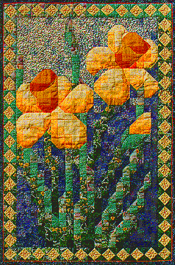

Daffodil MosaicDaffodil Mosaic
Daffodil MosaicDaffodil Mosaic
| #P105..........$7.95 25" X 37" My friend Mary loves to see each of my quilts as I finish them. As a matter of fact, she doesn't believe that they're finished until she sees them. She's so used to me having tons of UFO's, that usually she asks how many unfinished quilts I have, not how many have I finished. When I brought this one for her to see, I received a botany lecture. Daffodils are monocots. Their leaves have parallel veins and the flower petals occur in threes. So, my daffodils were botanically incorrect. There should have been six petals. Of course, I then informed her that the sixth petal just wasn't visible. It had either fallen off, or it was in the back where you couldn't see it. She could take her pick of explanations. Maybe some day I'll add a petal to the back of the quilt! Daffodils jumping out from a Square in a Square border will announce the arrival of spring, any time of year. |
 Copyright 1995, Jane L. Kakaley |